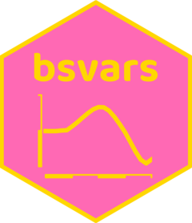

Provides posterior summary of impulse responses
Source:R/summary.R
summary.PosteriorIR.RdProvides posterior summary of the impulse responses of each variable to each of the shocks at all horizons. Includes their posterior means, standard deviations, as well as 5 and 95 percentiles.
Usage
# S3 method for class 'PosteriorIR'
summary(object, ...)Arguments
- object
an object of class PosteriorIR obtained using the
compute_impulse_responses()function containing draws from the posterior distribution of the impulse responses.- ...
additional arguments affecting the summary produced.
Value
A list reporting the posterior mean, standard deviations, as well as 5 and 95 percentiles of the impulse responses of each variable to each of the shocks at all horizons.
Author
Tomasz Woźniak wozniak.tom@pm.me
Examples
specification = specify_bsvar$new(us_fiscal_lsuw)
#> The identification is set to the default option of lower-triangular structural matrix.
burn_in = estimate(specification, 5)
#> **************************************************|
#> bsvars: Bayesian Structural Vector Autoregressions|
#> **************************************************|
#> Gibbs sampler for the SVAR model |
#> **************************************************|
#> Progress of the MCMC simulation for 5 draws
#> Every draw is saved via MCMC thinning
#> Press Esc to interrupt the computations
#> **************************************************|
posterior = estimate(burn_in, 5)
#> **************************************************|
#> bsvars: Bayesian Structural Vector Autoregressions|
#> **************************************************|
#> Gibbs sampler for the SVAR model |
#> **************************************************|
#> Progress of the MCMC simulation for 5 draws
#> Every draw is saved via MCMC thinning
#> Press Esc to interrupt the computations
#> **************************************************|
# compute impulse responses
irf = compute_impulse_responses(posterior, horizon = 4)
irf_summary = summary(irf)
irf_summary$shock1 # inspect IRFs of the first shock
#> $ttr
#> mean sd 5% quantile 95% quantile
#> 0 0.03092074 0.001061909 0.02965049 0.03197694
#> 1 0.02853860 0.001891053 0.02615003 0.03011722
#> 2 0.02654730 0.002308912 0.02367621 0.02848632
#> 3 0.02481648 0.002490679 0.02180641 0.02717941
#> 4 0.02326999 0.002556447 0.02030309 0.02592094
#>
#> $gs
#> mean sd 5% quantile 95% quantile
#> 0 -0.036474268 0.005109724 -0.041210310 -0.0297456368
#> 1 -0.017619757 0.001884389 -0.019561921 -0.0152604179
#> 2 -0.008297153 0.001741188 -0.009944708 -0.0061517211
#> 3 -0.003672980 0.001503406 -0.005463615 -0.0020270931
#> 4 -0.001382716 0.001093874 -0.002778254 -0.0002658229
#>
#> $gdp
#> mean sd 5% quantile 95% quantile
#> 0 0.015174669 0.0016870949 0.013013539 0.016806725
#> 1 0.010217577 0.0006085651 0.009602515 0.010936525
#> 2 0.007587108 0.0007335431 0.006844045 0.008367441
#> 3 0.006110231 0.0009473965 0.005339679 0.007298060
#> 4 0.005214035 0.0011050551 0.004200673 0.006637700
#>
# workflow with the pipe |>
############################################################
set.seed(123)
us_fiscal_lsuw |>
specify_bsvar$new() |>
estimate(S = 5) |>
estimate(S = 5) |>
compute_impulse_responses(horizon = 4) |>
summary() -> irf_summary
#> The identification is set to the default option of lower-triangular structural matrix.
#> **************************************************|
#> bsvars: Bayesian Structural Vector Autoregressions|
#> **************************************************|
#> Gibbs sampler for the SVAR model |
#> **************************************************|
#> Progress of the MCMC simulation for 5 draws
#> Every draw is saved via MCMC thinning
#> Press Esc to interrupt the computations
#> **************************************************|
#> **************************************************|
#> bsvars: Bayesian Structural Vector Autoregressions|
#> **************************************************|
#> Gibbs sampler for the SVAR model |
#> **************************************************|
#> Progress of the MCMC simulation for 5 draws
#> Every draw is saved via MCMC thinning
#> Press Esc to interrupt the computations
#> **************************************************|
irf_summary$shock1 # inspect IRFs of the first shock
#> $ttr
#> mean sd 5% quantile 95% quantile
#> 0 0.04659372 0.01993729 0.02933874 0.07179004
#> 1 0.04833039 0.02222745 0.02672231 0.07500858
#> 2 0.04987886 0.02637512 0.02428995 0.08150715
#> 3 0.05127231 0.03120926 0.02202973 0.08882602
#> 4 0.05255032 0.03624739 0.01978081 0.09660585
#>
#> $gs
#> mean sd 5% quantile 95% quantile
#> 0 0.03248188 0.1579796 -0.15266432 0.2041703
#> 1 0.04502514 0.1422459 -0.11570046 0.2007111
#> 2 0.05700275 0.1291887 -0.08140222 0.1984146
#> 3 0.06848704 0.1192073 -0.05079574 0.1972687
#> 4 0.07955732 0.1126833 -0.02292826 0.2052709
#>
#> $gdp
#> mean sd 5% quantile 95% quantile
#> 0 -0.000909720 0.02334398 -0.02734369 0.02555983
#> 1 -0.003563083 0.02473715 -0.03166339 0.02391114
#> 2 -0.006423975 0.02605456 -0.03611366 0.02168736
#> 3 -0.009492390 0.02738747 -0.04071812 0.01908764
#> 4 -0.012769986 0.02883335 -0.04550160 0.01605204
#>